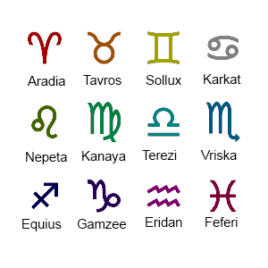

Homestuck is an Internet fiction series created by American author and artist Andrew Hussie. The fourth and best-known of Hussie's four MS Paint Adventures, it originally ran from April 13, 2009 to April 13, 2016. Though normally described as a webcomic, and partly constituted by a series of single panel pages, Homestuck also relied heavily on Flash animations and instant message logs to convey its story, along with occasional use of browser games.
Its plot centers on a group of teens who trigger the inevitable destruction of Earth by installing the beta version of an upcoming PC game, Sburb. The teens soon come into contact with a group of Internet trolls who are revealed to be horned aliens, and these trolls work with the kids to create a new universe by completing the game. It has been noted for its complex and nonlinear plot, considerable length at over 8,000 pages and 800,000 words, and intensely devoted fan community.
The success of Homestuck has resulted in numerous related projects and sequels, including the Hiveswap series of adventure games.
In 2009, on thirteen-year-old John Egbert's birthday, he receives a beta copy of an upcoming computer game, Sburb. Upon installing the game on his computer, he triggers a real life meteor storm, as a massive meteor approaches him, with a countdown slowly ticking down to when it will collide with his house. John survives only by being transported to a place called "the Medium". John's friends, Rose Lalonde, Dave Strider, and Jade Harley join him in the game along with their guardians, and they learn that playing the game has inadvertently triggered the destruction of Earth and that they must beat Sburb to create a new universe.
John and his friends are attacked by a ruthless villain known as Jack Noir while exploring the medium. As this is ongoing, John and his friends are also harassed by a group of twelve Internet trolls whose own session of Sburb was a failure that they blame the kids for. Among them, Karkat Vantas, Kanaya Maryam, Terezi Pyrope, and Vriska Serket each develop a relationship with the four humans, and the trolls are revealed to be an alien species simply called "trolls". The narrative shifts to a side story arc about the trolls and the specific sequence of events that led this group to play their own session of the game. The group and troll society as a whole is manipulated by the enigmatic Doc Scratch, who serves an even more mysterious master. The trolls win their session and a new universe – the universe the kids inhabit – is created. Before they can claim their prize, they are attacked by Jack Noir and forced into hiding, where they begin to troll the kids via a chat program.
Each of the twelve trolls is associated with a Western zodiac sign and a color.
Returning to the present, the two species cooperate to salvage the kids' game session. However, Vriska sabotages key events which results in the kids' accidentally empowering Jack Noir from a simple adversary to a seemingly-invincible monster. Rising tensions among the trolls eventually boil over, and some begin to attack and kill others; almost half the group (including Vriska) dies before Karkat manages to restore order. From Doc Scratch, the kids learn about a game mechanism called the "Scratch" that allows the humans to reset their session to escape Jack but will also inadvertently summon Lord English, Doc Scratch's master who seeks dominion over all of reality.
Executing the Scratch resets the kids' universe, and versions of themselves become guardians to a new group of players, who are versions of their own ancestors. As a result, John's late grandmother, Jane Crocker, is fifteen years old and the protagonist of the new arc. She leads her three friends Roxy Lalonde, Dirk Strider, and Jake English – the mother, brother, and grandfather of Rose, Dave, and Jade, respectively – through their own session of the game, while the original humans and surviving trolls journey through dimensions to the new post-Scratch session over the course of three years.
The post-Scratch version of Earth quickly becomes dominated by the Condesce, the sinister former troll empress now in service to Lord English. In lieu of trolls, the four post-Scratch kids interact online with two alien cherubs,[b] the siblings Calliope and Caliborn. While Calliope becomes a fast friend of the group, Caliborn resents their camaraderie, and is highly antagonistic towards them. After the post-Scratch kids enter their session, the two cherubs play their own version of Sburb in a session that sees Caliborn cheating to win by having his sister assassinated.
When finally uniting in the new session, the kids and trolls enact a plan to create a new universe and to defeat Lord English, the Condesce, and Jack Noir; the latter of whom escaped from the original doomed session. John Egbert develops new powers allowing him to retcon previous events within the Homestuck narrative. In the ensuing conflict, only John, Roxy, Dirk, and one of the trolls, Terezi, survive. With Terezi's guidance, John retcons key events in the narrative, most notably Vriska's death, setting up a timeline with a clear path to victory. In the retconned narrative, the kids and trolls defeat their enemies in a giant battle and create the new universe. The comic ends with Lord English fighting an army led by Vriska, Caliborn becoming Lord English after gaining unconditional immortality, and the remaining living heroes about to enter their newly created universe.
While nominally a webcomic, Homestuck consists of a combination of static images, animated GIFs, and instant message logs.[2] Generally, pages included a single panel, and navigational links to successive pages are phrased similarly to commands in interactive fiction games.[3]: 28–29 [4]: 1038–1039 Additionally, unlike previous works from Andrew Hussie which exclusively relied on GIF images for animation,[5] Homestuck introduced complex animations and browser games made with Adobe Flash, many involving contributions from fan artists.[8] According to academic Kevin Veale of Massey University, Homestuck used these various methods of engagement to manipulate its readers' experiences in order to tell a multilayered non-linear story.While nominally a webcomic, Homestuck consists of a combination of static images, animated GIFs, and instant message logs.[2] Generally, pages included a single panel, and navigational links to successive pages are phrased similarly to commands in interactive fiction games.[3]: 28–29 [4]: 1038–1039 Additionally, unlike previous works from Andrew Hussie which exclusively relied on GIF images for animation,[5] Homestuck introduced complex animations and browser games made with Adobe Flash,[6][7] many involving contributions from fan artists.[8] According to academic Kevin Veale of Massey University, Homestuck used these various methods of engagement to manipulate its readers' experiences in order to tell a multilayered non-linear story.
The basic premise of Sburb has been described as similar to games like The Sims,[9] Spore,[10] and EarthBound.[11] As in Hussie's prior webcomic Problem Sleuth, the adventure is characterized by time travel, mystery, a complex fictional universe, and frequent references to pop culture and previous adventures. Changes from previous stories include an emphasis on contemporary society, such as online gaming and Internet culture, which contrasts with the historical settings of MS Paint Adventures comics Bard Quest and Problem Sleuth.[12]
Hussie first launched an early version of Homestuck, the Homestuck Beta, on April 10, 2009.[13] The Homestuck Beta was published only three days after Problem Sleuth and ran until April 13, 2009.[13]
The initial style of the webcomic was developed to be advanced by fan contributions, with the fans deciding what actions the characters would take. Later, Hussie moved away from this style because the fan input method had grown "too unwieldy and made it difficult... to tell a coherent story." While Hussie now controlled the main plot of the story and the characters' actions, he still "visit[ed] fan blogs and forums" to figure out small things to add into Homestuck. However, throughout its run, content within Homestuck would cease to be updated in several named pauses. The most infamous of these pauses was the result of Andrew Hussie taking a full year to solely focus on the production of Hiveswap in the gigapause.[16][17]
On April 13, 2016, Hussie released the final chapter of the webcomic: a nine-minute-long animated short titled "[S] ACT 7". Hussie stated that an epilogue to the webcomic would be released at some point in the future.[18][19] In late 2016, the comic updated with a credit sequence and more panels in the form of a Snapchat story.[20] By the end of its run, the entire work contained over 800,000 words across at least 8,000 pages.[6][21]
After its completion, writer Ben Tolkin said, "Do I recommend Homestuck? Should you drop everything and start reading it? You can't. Homestuck is over, and I mean over, not just that it isn't updating. 'Homestuck,' the masterpiece, was the event, the community, the shifting pace of updates, the constant chatter between fandom and author. Homestuck is done. If you missed it, you missed it." Rob Beschizza added that reading Homestuck now would be "like buying a DVD of Woodstock. It doesn't matter how well they played or how pretty they were; what mattered was being there."
In 2018, Hussie partnered with Viz Media to release physical versions of Homestuck.[23][24] These hardcover books featured the original storyline and art, while also providing new commentary.
A significant amount of merchandise has been sold through Hussie's shop, company, and record label What Pumpkin, including "T-shirts, hoodies, pins, books" and fan art prints. Fans have also been "recruited" to make music for the webcomic. The music has been bundled into albums, with ten major soundtrack albums having been released thus far, in addition to eighteen side albums.[14][25] On April 13, 2014, the fifth anniversary of Homestuck, Paradox Space, an anthology spin-off webcomic, was launched.[26]
On April 13, 2019 – exactly ten years after Homestuck started – The Homestuck Epilogues began.[27] The Epilogues are presented in purely text format with no images, completely abandoning the webcomic genre and instead being styled similarly to Archive of Our Own fanfiction. Alongside Andrew Hussie, it was also written by multiple fan writers.[28] Though released for free online, the Homestuck Epilogues were also given a physical release.[29]
n October 25, 2019, an official followup was launched, titled Homestuck: Beyond Canon, initially Homestuck^2.[30][31] Homestuck: Beyond Canon has been written by a team of writers based on a story outline by Hussie, and the project receives funding from Patreon.[31] In March 2021, Homestuck: Beyond Canon's about page was updated to state that the work was "updated regularly for about a year until it was paused indefinitely. The creative team is now being commissioned to finish the story privately. All content will be posted here at once when the story is complete."[32] According to a February 2021 post on Homestuck's Patreon page, "Homestuck^2 is going to be completed, but this Patreon will not be charging patrons anymore."[33] Snake Solutions, a company commissioned to write and illustrate Homestuck^2, has reportedly shut down.[34] On October 8, 2023, the comic was updated again for the first time in nearly three years, with a news post stating that the comic was being worked on by a new team being directed by Hiveswap composer James Roach, with Hussie acting as Executive Producer. On October 30, 2023, the Homestuck Patreon was relaunched. The ^2 from the title was also dropped, with Roach saying "In the original outline, it was just called Homestuck: Beyond Canon. Andrew mentioned the old team pushed for the ^2 but this isn't actually a sequel in the traditional sense." The original chapters leading up to the first 2023 update were also referred to as a "prologue" by Roach.[35]
Early in Homestuck, Hussie introduced a webcomic contained within the main story titled Sweet Bro and Hella Jeff.[36] The webcomic, drawn within Homestuck by character Dave Strider, is intentionally poorly made.[37]
TopatoCo produced a print publication collecting the strips. The press release from TopatoCo described Sweet Bro and Hella Jeff as "the worst comic strip ever".[38] In 2017, TopatoCo announced a second Sweet Bro and Hella Jeff book, co-written by dril,[39] co-drawn by KC Green, and funded through Kickstarter.[40]
On September 4, 2012, Hussie announced a Kickstarter to raise funds to develop a Homestuck video game.[41] Kotaku noted that the project had raised "more than $275,000 in hours".[42] More than 80% of the $700,000 goal was pledged in the first day.[43][44] The game reached the full $700,000 of funding in fewer than 32 hours.[41] The campaign also reached certain "stretch goal" amounts, whereupon Hussie added macOS and Linux support onto the proposed game.[45] Digital Trends writer Graeme McMillan commented that the campaign was approaching, at the time, the record for most successful comics-related Kickstarter campaign, which was previously held by The Order of the Stick campaign with $1,254,120.[46] The Kickstarter eventually raised $2,485,506, making it the "fifth game on Kickstarter to pull in a full seven figures" and the third highest funded video game in Kickstarter history at the time. An additional PayPal-based fundraiser was created to accommodate those who could not donate via Kickstarter's available methods.[47][48]
While development was going to initially be done by game studio The Odd Gentlemen, production was later moved in-house to What Pumpkin.[49] This coincided with a change in the game's art style from 3D to 2D.[17] Development began in 2013, with the finished product expected in 2014; the first episode was later released in 2017.[50]
Additionally, Homestuck has led to the creation of two visual novel games: Hiveswap Friendsim and Pesterquest.[31]